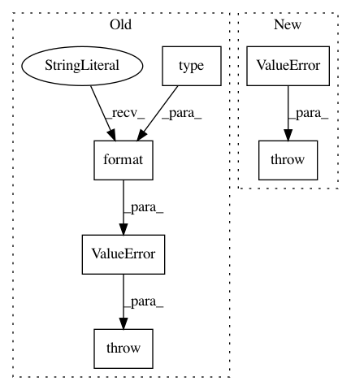

1a895914343d520c260f53eb32ec91d4e75c9fe3,pixyz/distributions/distributions.py,MultiplyDistribution,__init__,#MultiplyDistribution#,883
Before Change
if not (isinstance(a, Distribution) and isinstance(b, Distribution)):
raise ValueError("Given inputs should be `pixyz.Distribution`, got {} and {}.".format(type(a), type(b)))
// Check parent-child relationship between two distributions.
// If inherited variables (`_inh_var`) are exist (e.g. c in p(e|c)p(c|a,b)),
// then p(e|c) is a child and p(c|a,b) is a parent, otherwise it is opposite.
After Change
// Set variables.
_var = _child.var + _parent.var
if len(_var) != len(set(_var)): // e.g. p(x|z)p(x|y)
raise ValueError(f"Variables of two distributionsl,"
f" {_child.prob_text} and {_parent.prob_text}, are conflicted.")
// Set conditional variables.
_cond_var = _child.cond_var + _parent.cond_var
_cond_var = sorted(set(_cond_var), key=_cond_var.index)
In pattern: SUPERPATTERN
Frequency: 3
Non-data size: 6
Instances
Project Name: masa-su/pixyz
Commit Name: 1a895914343d520c260f53eb32ec91d4e75c9fe3
Time: 2020-01-19
Author: kaneko@weblab.t.u-tokyo.ac.jp
File Name: pixyz/distributions/distributions.py
Class Name: MultiplyDistribution
Method Name: __init__
Project Name: masa-su/pixyz
Commit Name: 1a895914343d520c260f53eb32ec91d4e75c9fe3
Time: 2020-01-19
Author: kaneko@weblab.t.u-tokyo.ac.jp
File Name: pixyz/distributions/distributions.py
Class Name: ReplaceVarDistribution
Method Name: __init__
Project Name: masa-su/pixyz
Commit Name: 1a895914343d520c260f53eb32ec91d4e75c9fe3
Time: 2020-01-19
Author: kaneko@weblab.t.u-tokyo.ac.jp
File Name: pixyz/distributions/distributions.py
Class Name: MarginalizeVarDistribution
Method Name: __init__